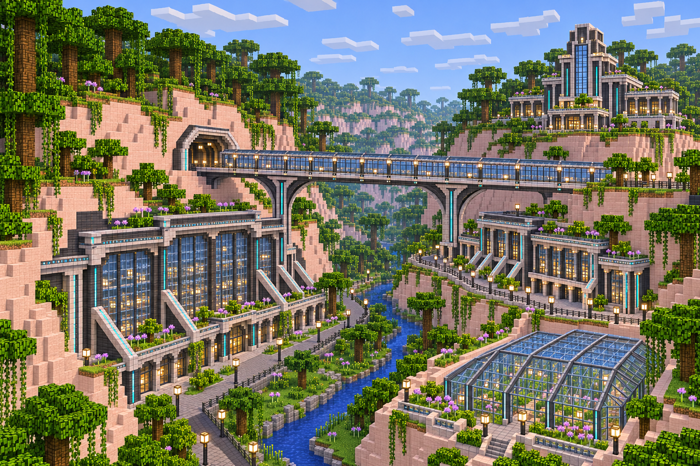
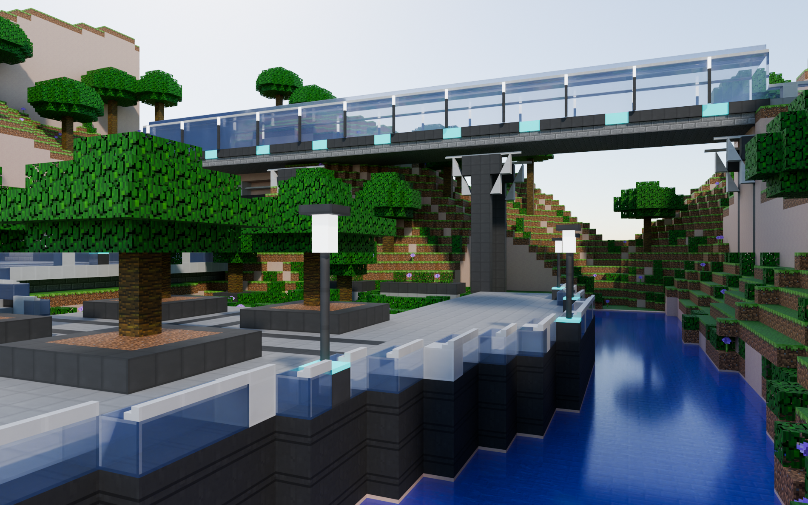
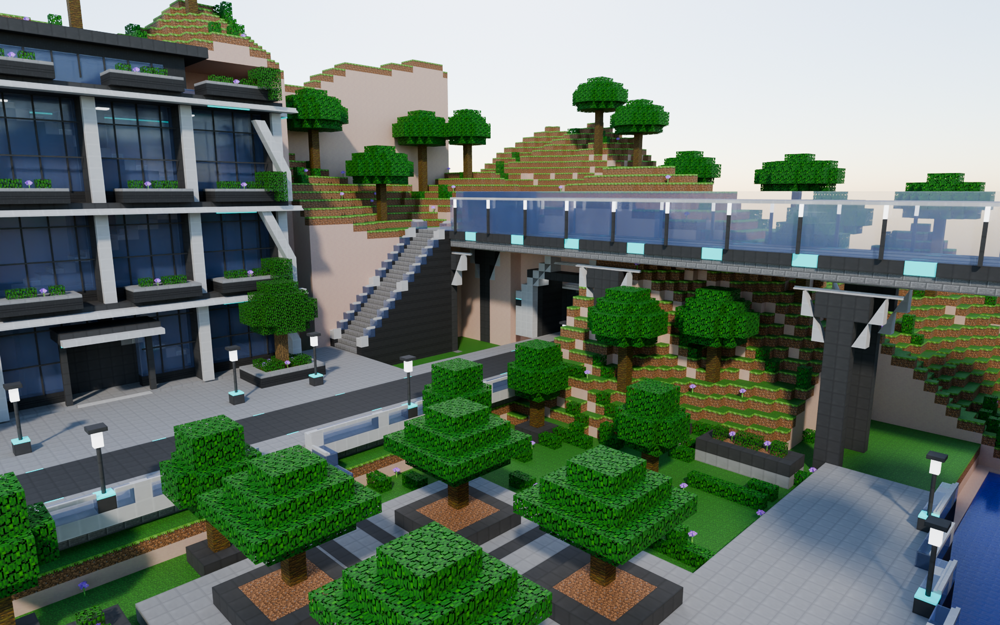
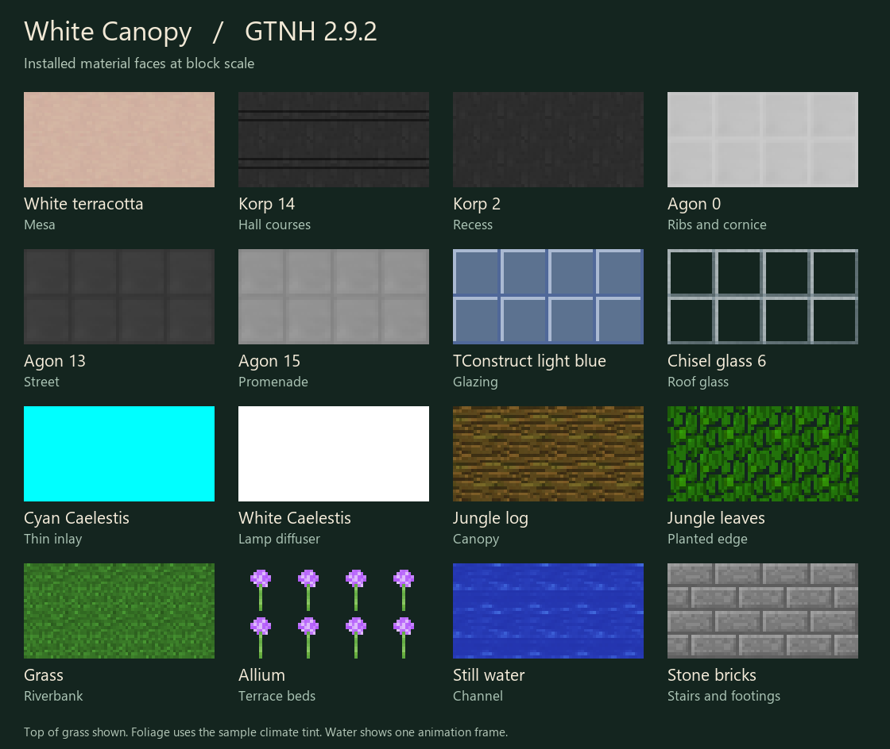

Cliff Promenade
Cut the hall into the white mesa. Carry its paving through the doorway, step the garden down to the river, and leave daylight under the glazed crossing.

ImageGen redrew the supplied aerial using the installed 2.9.2 swatches. The cliff tower and greenhouse belong to the concept composition.
The modeled skyline seats 05-05 HQ on the higher mesa and 07-02 Greenhouses on a lower terrace, with a second glazed hall frontage across the water. Panorama placements · Panorama block model
WC01 / Worked frontage
From hall door
to riverbank.
Start with the road through the north portal. It gives the hall, the park stairs and the upper crossing a common height to build from. This is a detachable district study for a ledge you choose in your own canyon.
Local northwest origin · +X east · +Z south · Y0 is the road surface. Survey your river and bearing rock before translating these heights into the PDIM.

Offline render of the saved blocks. The clay and trees beyond the construction area illustrate a possible canyon.
Look across the park toward the hall and upper crossing

Build this style from 12 reusable pieces ↗
Set out the joins
- Stake the avenue. The 12-block road occupies X31–42. Its north end passes through the molded MK14 portal. At Z55 the paving runs from the hall doorway through the sidewalk to the crossing.
- Set the park below the curb. Take the descent near Z50. Follow the lower walk through the four-way garden to the overlook. Keep the turn into the park and the bench approach open.
- Join both bridge landings. From the road, turn toward the stair at X19 and climb north. Three MK36 glazed spans cross on the upper level. Seat the piers on surveyed solid ground.
- Finish the wet edge. Complete the bed, bank and end stops before adding water. Each marked source occupies Y−7. The dry ghost gives you the retaining work, trees, planters and lights.
GTNH 2.9.2 / Materials
The cliff and its frame.
Leave warm white terracotta exposed between bays. Use Korp for the recessed charcoal walls, Agon 0 for the pale molded ribs, and light-blue TConstruct glass between them. Carry Agon 15 from the sidewalk to the door. Keep the cyan Caelestis in the narrow cuts and the white diffuser under the lamp cap.
See the 16 installed material swatches

Each swatch repeats an extracted block face. Leaves and grass use the sample climate tint. The water tile shows one frame of the animation.
Sample 2 / Architecture
Carry the frontage
into each sector.
Choose a ledge for the department first, then connect its public entrance to the next walk. Match the height of a sill, a planter cap or a cornice across each join. Keep a strip of visible white clay between large cuts.
- NW · Steam Works
- Turn the thermal hall’s glazed bays toward the lower street. Run the pale knee into a planter cap beside the entrance. Keep the north service approach clear.
- NE · Materials Laboratory
- Bring the upper hall cornice into the bridge landing at the same height. Keep rock between the tunnel mouth and the glazing.
- SW · Greenhouses & Public Park
- Face the glasshouse toward the valley. Let its entry walk descend into the four-way garden. Use the stream as the water feature on a narrow bank.
- SE · HV Generation
- Set the back of the hall into the service ledge and open the braced bays toward the canyon. Give the crew walk a level overlook with access to the gallery.
- Central · HQ & Public Garden
- Step planted terraces up the protected 65-square civic plot. Place one overlook where the tower, upper crossing and river path share the same view.